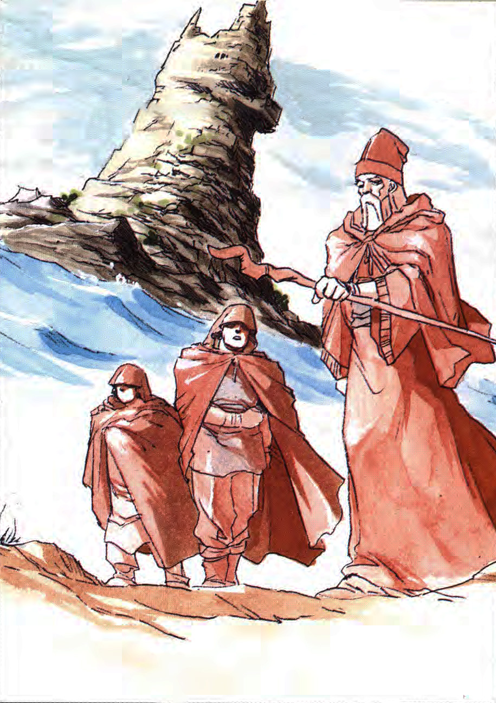
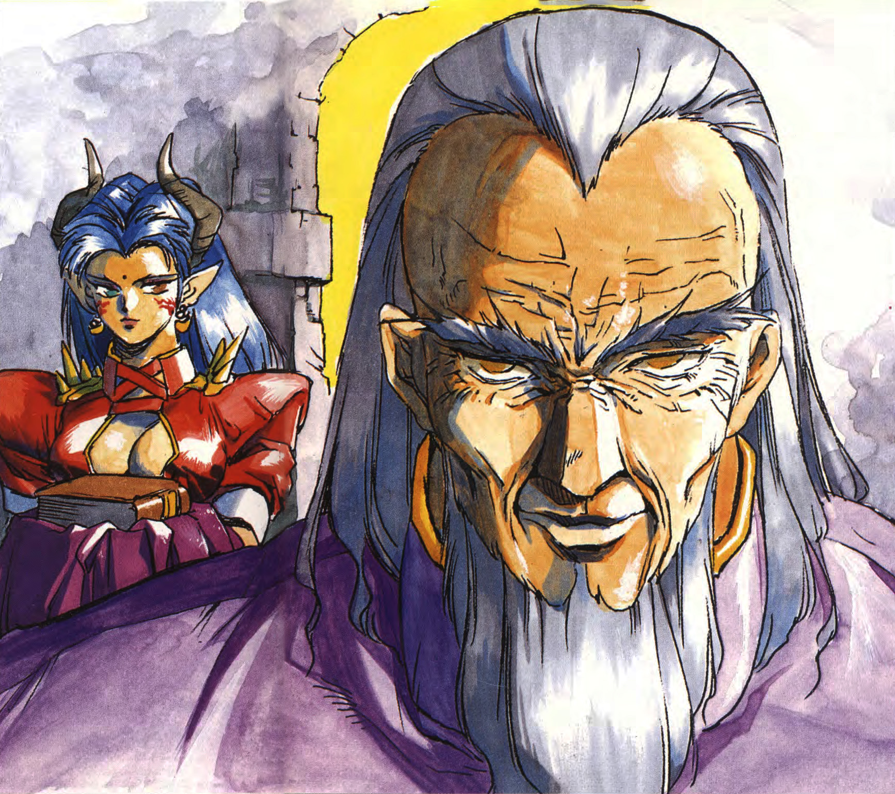
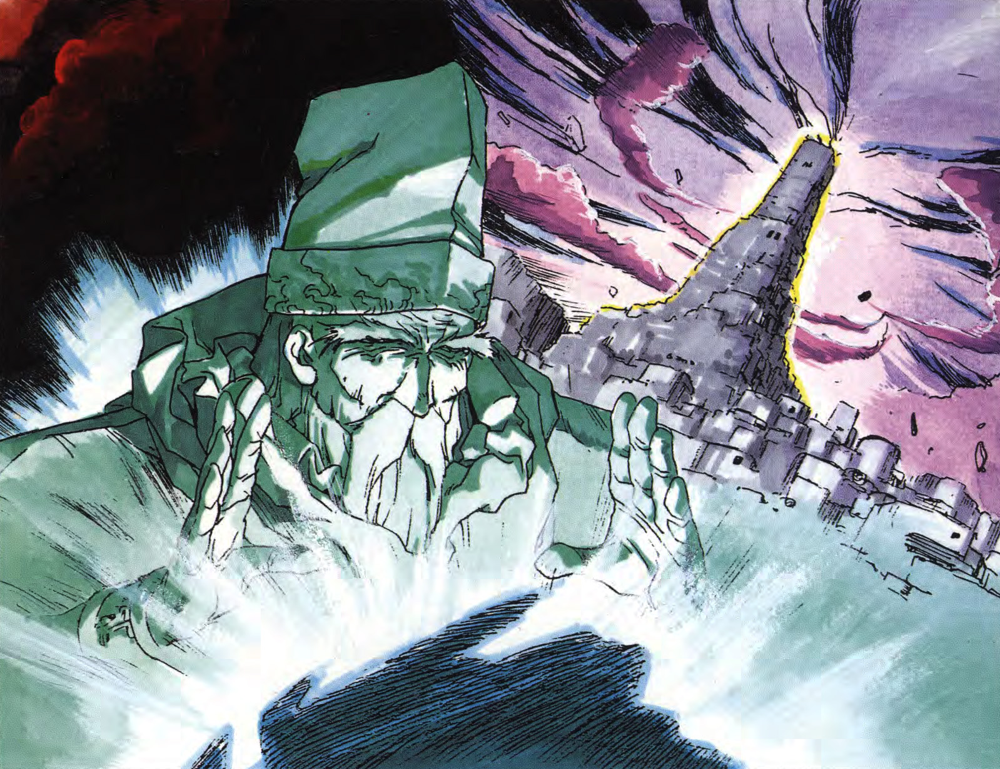
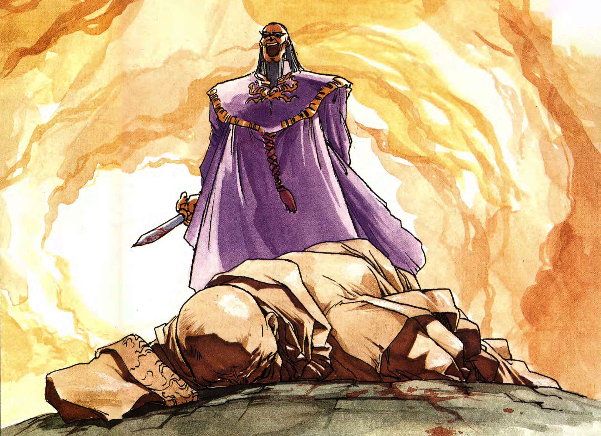
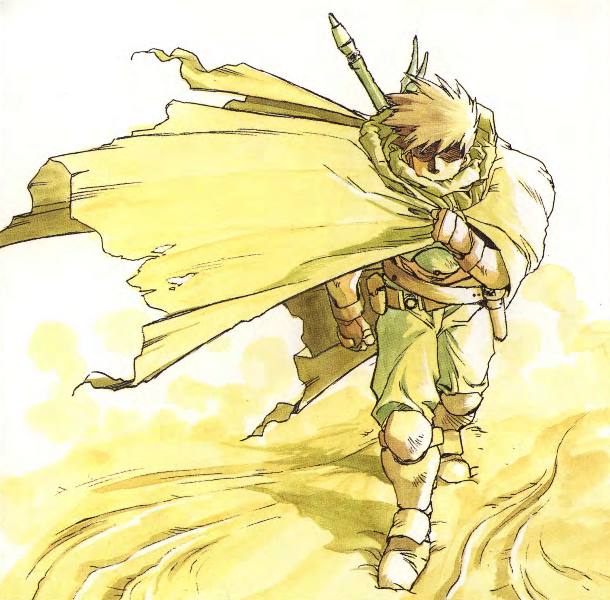
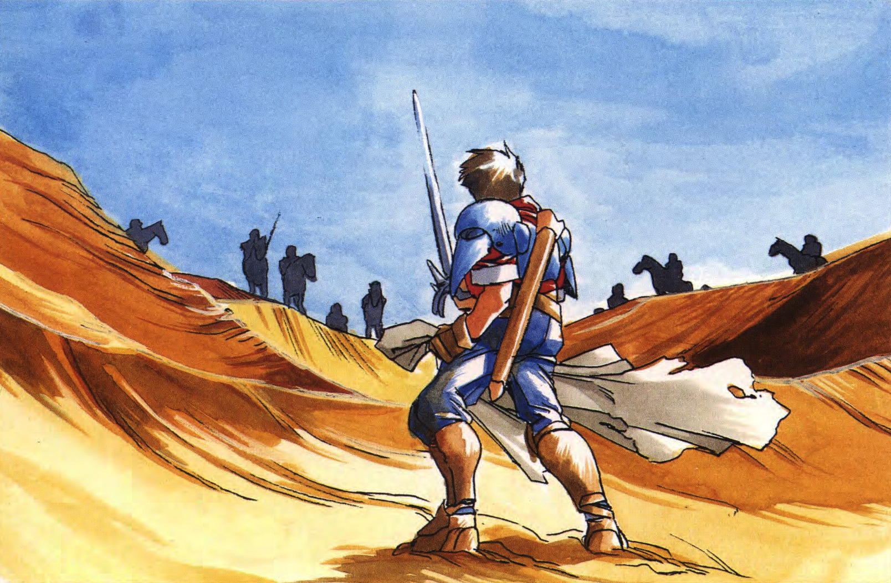

Story

Prologue
The sea breeze blew violently over the cape. Wild waves crashed against the wharf’s seawall. Following the mountain ridge across the rocky peninsula leads to a castle shrouded in darkness at the far end. In the overcast weather, the silhouettes of three people heading toward the castle stop one after another.
The first to stop is a perplexed, old man, dressed in a brown robe. His clothes are decorated with an intricate pattern of crimson and deep blue colours. Out of his sleeve stuck a wooden staff. His hood conceals a dignified face wrapped in a turban. The other two looked like his followers. One may have been forty, the other a young lad awestruck by the castle. After comparing the lead-coloured clouds with the rusty-coloured sea, the eldest looked down on the fishing village beneath him.
In the central square of the village lies a destroyed, abandoned trawl. The brave voices of fisherman were nowhere to be heard. Several badly damaged smacks were tied together in the inlet, where they calmly floated, deserted forever.
‘What is the world coming to...’
A sudden gale pulled back the hood of the eldest.
‘The king is waiting. Let us make haste,’ the youngest diffidently commanded.
The eldest silently pointed his staff at the vast ocean. It then slowly floated across the village, further beyond, until it came to a halt above an inaccessible, rocky island. Despite the thick layer of clouds blocking all sunlight, a single ray of light managed to seep through and faintly illuminate the island’s barren rocks.
That austere scene suddenly transformed into a stronghold as if summoned directly from the netherworld.
‘That is prison island Bellsaddce, as demanded by King Badorrer... An ill-advised demand, I may add...’
That remark was neither a soliloquy nor in anticipation of an answer.
‘Please mind your wording, Old Sage. Modesty will be most befitting in front of the king.’
This time it was the forty-year-old follower that spoke.
The sage scowled at Bellsaddce with an expression so grim it rivalled the atmosphere that very prison island. Until the two followers urged the him to continue their walk, he stood there motionlessly.
Like the crashing of the waves, the sea breezes continued to blow violently.
Return to topChapter 1: The King & The Prophet
The Earth moves according to Heavens' laws.
Some seek power, others long for fortune or immortality.
And some seek all of the above.
The wickedness within mankind shall not perish as long as the earth moves.
Yet pursuing man's desires left them exposed to failure time and time again.
It was not just Bistalle, ruler of the fallen kingdom Vittoria, that sought the source of omnipotence. At the very same moment the entrance to the realm of the dead opened northeast of Banourd, the prophet Benedicte was invited to the royal castle of the Bundevia, which bordered on the vast ocean. Halfway his journey to the kingdom, Benedicte sensed a tormenting presence wrapping around him like the haze cloaking the world.
Bundevia was ruled by a once great king, but as he aged his authority dwindled alongside his dignity. The unrest in his heart was publicly projected as extortion and misgovernment. The construction of prison island Bellsaddce symbolised that anxiety. Badorrer, the king of Bundevia, planted himself firmly in his throne and waited.
‘Thank you for coming, great prophet Benedicte.’
‘I came like you asked,’ the old man responded somewhat curly.
‘My my, it seems my request upset you. Do forgive me. A little bird told me the great prophet Benedicte has been making a name for himself in the world, and so I decided to summon this great prophet hither. You see, I would really like to borrow his power.’
‘My power, hmm... Before I answer, can I ask you something?’ Benedicte inquired as he looked into the king’s cloudy eyes. ‘Upon my arrival in Bundevia, I saw little of the land that used to promise me immaculate beaches and flocks of sea birds above a serene sea. It had me wonder whether this sudden change is, perhaps, the wrath of the heavens for the indiscretion of its monarch.’
This statement, an unequivocal critique of the very king that sat before him, had all officials and soldiers that happened to attend the visitation turn pale. Instead of holding his breath like those around him, the old man continued.
‘Rulers across the world hold countless desires, so what is it that you desire, King Badorrer?’
‘As expected from a great prophet; you speak with ease. My wish, of course, is to live forever and rule so as I do.’
‘You are a slave to dastardly designs. Stories of imprisoning the innocent have even reached neighbouring shores. You are aware that the heaven, earth and sea wail, are you not? This was all caused by a ignorant buffoon, disturbing the balance of nature. The law to control all creation was not entrusted to humans. But to the heavens and the heavens only.”
‘Those hoping to break with the status quo always are the target of rumours. It is up to the history not yet written to judge whether they had been wrong, indeed. Besides, it is my right to do so.’
Badorrer smiled coldly and made a beckon gesture with his hand.
‘This, here, is an ancient book.’
As he announced his possession, he was brought a book bound graciously and presented on a crimson cloth on a blackened plate. The king took the book in his hands and held it so Benedicte could get a glimpse of its writing.
‘It has been slumbering in the treasure room of this castle. It appears to be hand-written and transcribed by hand countless of times. Although I refer to it as a manuscript, this very book is over some three hundred years old.’
One glimpse was enough for Benedicte to conclude it was, indeed, ancient Vittoric. Not having caught that answer, the king asked the old man: ‘Are you familiar with the tale of how the nation of Vittoria was buried overnight?”
‘Even when the world loses its green, life goes on as usual for us street folk.’
The prophet’s answer to the question implied he was.
‘It has been most worthwhile to summon you.’
‘I have not yet stated I will lend you my power, King Badorrer. If you know why Vittoria fell overnight, you also know that it fell because of a benighted ruler made obnoxious decisions.’
‘I most certainly do. It is written in this book that a tragedy befell the cursed nation after it obtained the source of omnipotence All. And in order to obtain power, it is paramount to offer something of equal value in return. Besides, there is no reason to be afraid if you know how to draw out the right power.’
‘Are you saying that the methods of obtaining power for the buried Vittoria could have been foretold?’
‘Precisely. Bundevian scholars have thoroughly investigated this book. They discovered that Vittoria and Bundevia were originally one civilisation that diverged over a difference in opinions. Nonetheless, a thousand years ago our nation engaged in trade with Vittoria, which ultimately became known for its distinctive wealth. In other words, yours truly has the right to revive the power that was once bestowed upon us.’
The king feverishly told about the withered history of his own nation. It may have been imagination, but it seemed like King Badorrer’s heart pounded with excitement as he descibed about how the two nations originated as one country.
‘Isn’t that just another wild story?’
‘You may think so, but I now have two firms reasons to believe it holds some truth. First of all, there’s the fact that books, like this one, written in ancient Vittoric have been found across Bundevia. Our people call them Dark Words, like all scripts that have fallen into oblivion, meaning they must have come from a common ancestor. More recently, they even discovered these Dark Words in the depths of the prison island, making the authenticity of our findings more credible than ever. Second, there’s this statue which has been around since antiquity. It was left behind alongside this book, which features one paragraph about the statue.’
Demonstrated he was able to recite that paragraph by heart, the king narrated as if he conveyed a revelation of the Gods: ‘When the source of omnipotence All is activated, the statue will be engulfed in light-- And after a period of one month, the light will fade again. The power will then have been resurrected somewhere in this world.’
Benedicte’s eyes glittered slightly.
‘Where is the statue right now?’
‘It’s enshrined at the highest floor of the tower. The statue is a coiled dragon-shaped wooden block. If you touch it, you should be able to learn about the whereabouts of said power.’
‘King Badorrer. The laws of the Heavens have already been set. My power does not grant me knowledge of everything nor the ability to put its power in the hands of man. As long as you keep that in mind, we can proceed the fortune-telling. But know the following: All of you here will have to accept this warning. The king lives under the illusion that he summoned me here himself, but it was the will of the Heavens that led me here. If you, too, wish to learn the location of the power for the sake of the king’s ambitions, then I will shall tell the whereabouts of the power to demonstrate the destructive path the king is about to embark on. Is that alright with you -- with all of you?’
‘Very well, then...’
King Badorrer put the ancient book back on its tray and started walking. In complete silence, the king and Benedicte moved across the red carpet laid out by the soldiers and headed for the tower where the ancient statue awaited their arrival.
Chapter 2: The Ancient Statue
Only the king and Benedicte entered the room at the top of the tower. Officials and soldiers waited outside the door until the ceremony was over. In the centre of the silent room, their faces were lit by the faint light pulsated by the statue. To get a better look at the statue, Benedicte kneeled on the floor. He reached out with both hands to the light while shielding his eyes. The closer his hand got to the statue, the more he felt a fighting spirit. It looked as if a floss of silk emerged from the light itself.
‘What’s the matter?’ King Badorrer asked.
‘This light... It undoubtedly reacts to the power. Extraordinary power is leaking.’
‘Leaking from where? What place?’
In response to the king’s question, the prophet concentrated so intensely it triggered a frown line between his eyebrows. Putting his hands together, Benedicte imagined he was holding a ball of light. That ball of light always allowed him to peek into his spirit before an oracle would bestowed upon him.
Darkness.
All he could see was darkness. What he felt was a deep and dark, underground presence.
‘Darkness... It’s underground... I learnt that it’s somewhere underground. And if we were to follow the legends, that would suggest within Vittoria...’
The old man’s cupped hands were forced apart by the spirit’s will to fight. A dazzling ball of light floated in the room. Surrounding the ball were numerous smaller balls of light orbiting. They gradually sped up and became brighter with each orbit. The moment Benedicte’s curiosity was stilled, the air in the room started to vibrate and an intense light suddenly gushed up from the statue.
A mental image started to play in the prophet’s mind.
Beautiful castle walls... at night... The calm stream of a large river, wavering the beautiful moon.
‘It’s the city... of the blue moon.’
‘City of the blue moon?’
Next, Benedicte saw a swordsman.
‘I can see a man. Nothing has happened so far... That person holds the sword in which the power is sealed away... And the sword... It’s not really a sword... It’s a power disguised as a sword...’
The prophet uttered the words as they came to mind.
‘This person... Who is he?’
‘I don’t know... However, fate will bring him to Bundevia... Not now... In two years, yes... He brings back the power from Vittoria and will end up wandering in Bundevia... However, the actual source of omnipotence is unquestionably hidden away even deeper. The sword is a mere fragment of its power...’
Suddenly, Benedicte groaned bitterly. He had exhausted his mental strength to channel the vision. The thread of silk energy he had been using was severed and the power that had occupied the room disappeared, alongside the light it brought forth. The room returned to its original, dark state.
The old man lowered this shoulders and tried to catch a breath. His age started to affect his concentration.
‘That is... what I... could learn.’
It was when Benedicte stopped talking and fell on his knees in front of the statue, that the king finally spoke again. 
‘I see. Thank you for your efforts,’ he laughed from behind Benedicte’s back and drew a dagger. He slowly stuck the blade, shining dimly, in the side of the kneeling prophet until Benedicte silently fell over on his face.
‘Now then, what did the ancient book tell us… Treatment of the Planet Buster... And a swordsman returning from the depths alive... And two years from now, he will bring one fragment of the power and end up wandering through Bundevia... I see... The power will be heading our way...”
Badorrer felt an irresistible urge to laugh and did so most audibly. It was this expression, distorted in ecstasy, this ridiculous face that he would use to greet the person to bring him his power.
Return to top
Chapter 3: The Wandering Swordsman

After more than two years...
A man walks through the desert. Wrapped in a cloak to protect himself from the sunrays. On top of the cloak hangs a longsword diagonally across his back. The sword boasts unique decorations on its fan-shaped guard.
The man is named Ares. He is a bounty hunter and a well-known target for bounty hunters. He is a man who leaves everything up to chance, a mercenary and bodyguard wrapped in one. And most importantly, he is a man who operates in the most illogical ways. The combination of his skills with a sword and the insatiable thirst for bloodshed that just flows out his ripped body -- it should be mentioned Ares’ physique is medium-sized, not your average giant -- fuels dismay among bounty hunters.
Ares stopped on a dune, barely able to see what laid before him.
He had arrived at the border desert leading into Bundevia. The hills of sand obstructed his field of vision. There was not a single sign of civilisation to be seen or felt. He had run out of rations. Wandering through the desert slowly started to take its toll. His feet were moving forward, but he himself forgot how he winded up here in the first place. Just the sheer thought of how utterly monotonous traversing a desert afoot was enough to paralyse his brain.
Fivelria, Banourd, Verun... Ares had always walked aimlessly. Every now and time he did have reasons to follow a specific path, usually when a bounty was involved. Regardless of his reasons, he always managed to push through somehow. And that was his reason to traverse this desert afoot -- for almost three days now.
But the desert has been uncompromising. No matter how long he walks, with no end in sight the desert seems to be endless, indeed. It is as if the sight of yellow sand as far as the eye can see was there to confront Ares that his luck had finally ran out. Would he have had fellow travellers, they would have known what Ares was going through and shared his fatigue. Imagining companions is an easy trap for lonely people to fall in.
His feet were heavy. If he would turn around and look at his own footprints, he would have seen two lines leading up to his feet instead.
Ares realised that both his mind and body were fatigued more than he initially thought. The moment that realisation dawned upon him, he braced himself and collapsed in the sand. He couldn’t help but titter in self-mockery.
Sandstorms soared as if tracing the dunes in front of him. As the sound of sand and wind mingled, he faintly heard something else. The sound of hooves kicking up the dry sand. Then a neigh. The sound of armour being ruffled... He wasn’t sure whether this was reality or a hallucination. Ares tried to catch a glimpse of the top of the dune, forcing his eyes into a tremor.
But there was nothing, only sand.
And just as he concluded it was just an hallucination after all, a chivalric group stormed onto the dune right before his eyes. It was a unit approximately ten strong. The group lined up on top of the dune and looked down on the fallen Ares. Though it was hard for him to say for certain, each of the soldiers looked equipped with cloaks against the sand and sun, completely prepared to traverse a desert like this.
(I have to fight...!)
Even in his current state, Ares instinctively reached out for the longsword on his back. But it took him so long, he became annoyed with himself. Grab it. Unsheathe. Everything he did felt like an independent movement rather than the actions of a body. When he thought, he was finally ready to face his opponents, he realised his sword was too heavy for him.
One of the chevaliers held up his right hand. On that signal, the rest of the group came down the dune heading for Ares. Their shouting, as if they were going to tear apart a sandstorm of men, reverberated in the sand as the horses’ hooves spread the scorching hot sand. In a very Ares’ way of welcoming them, he pulled himself back on his feet and held his sword above his head.
(What’s going on...?)
But he had no power left. He was exhausted, as if the sand beneath him sucked away his energy through his toes. Despite his willpower, he could do nothing to resist them. Whereas his will forced him to fight, he fell on both knees in the sand while staring at the approaching chevaliers. Resistance would be futile. Even his consciousness started to fade again. He couldn’t move, as if he was put under a spell.
(I see... This desert has been...)
The moment he realised there would have been no way for him to escape from the desert, his consciousness completely faded. His body felt like lead. With a dull thump, he collapsed on the sand. A cloud of sand his size reached for the sky.
The chevaliers expertly grip the reins and the surrounded the fallen Ares. 
‘Examine his sword,’ a man looking like the commanding officer said.
The others got off their horses one by one and gathered around Ares. One of them picked up the sword Ares had dropped and studied it with deep interest.
‘So, this is the Planet Buster,’ the only chevalier still mounted said.
Were Ares to have seen this man’s face, he would have smiled bitterly. It was Karl, the wandering mercenary force officer. A staff officer for hire and a well-known name in mercenary circles.
‘Show me his face.’
The soldier pulled up Ares by his hair so he could get a good look at Karl.
‘Ares, huh...’
After giving it some thought, Karl smiled silently.
‘Take him back on your horse and send him to Bellsaddce.’
Following the force officer’s command, Ares’ hands were bound by a straw rope and hung over the saddle of the last horse.
Even now his prey had fallen victim to the Desert Barrier cast by the Bundevian magician, the mission -- stealing the sword from Ares, unconscious, and drag him back through a desert -- it didn’t sit well with Karl.
Bundevia and its direct surroundings moved, beyond the shadow of a doubt, according the Heavens’ laws.